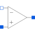

IdealizedOpAmpLimtedIdealized operational amplifier with limitation |

|
Information
This information is part of the Modelica Standard Library maintained by the Modelica Association.
Idealized operational amplifier with saturation:
- Input currents are zero.
- No-load amplification is high (but not infinite).
- Output voltage is limited between positive and negative supply.
Supply voltage is either defined by parameter Vps and Vns or by (optional) pins s_p and s_n.
In the first case the necessary power is drawn from an implicit internal supply, in the second case from the external supply.
Parameters (6)
| V0 |
Value: 15000.0 Type: Real Description: No-load amplification |
|---|---|
| useSupply |
Value: false Type: Boolean Description: Use supply pins (otherwise constant supply) |
| Vps |
Value: +15 Type: Voltage (V) Description: Positive supply voltage |
| Vns |
Value: -15 Type: Voltage (V) Description: Negative supply voltage |
| strict |
Value: true Type: Boolean Description: = true, if strict limits with noEvent(..) |
| homotopyType |
Value: Modelica.Blocks.Types.LimiterHomotopy.Linear Type: LimiterHomotopy Description: Simplified model for homotopy-based initialization |
Connectors (5)
| in_p |
Type: PositivePin Description: Positive pin of the input port |
|
|---|---|---|
| in_n |
Type: NegativePin Description: Negative pin of the input port |
|
| out |
Type: PositivePin Description: Pin of the output port |
|
| s_p |
Type: PositivePin Description: Optional positive supply pin |
|
| s_n |
Type: NegativePin Description: Optional negative supply pin |
Used in Examples (13)
|
Modelica.Electrical.Analog.Examples.OpAmps
Inverting amplifier |
|
|
Modelica.Electrical.Analog.Examples.OpAmps
Non-inverting amplifier |
|
|
Modelica.Electrical.Analog.Examples.OpAmps
Reproduce input voltage |
|
|
Modelica.Electrical.Analog.Examples.OpAmps
Differentiating amplifier |
|
|
Modelica.Electrical.Analog.Examples.OpAmps
Integrating amplifier |
|
|
Modelica.Electrical.Analog.Examples.OpAmps
Low-pass filter |
|
|
Modelica.Electrical.Analog.Examples.OpAmps
High-pass filter |
|
|
Modelica.Electrical.Analog.Examples.OpAmps
Comparator |
|
|
Modelica.Electrical.Analog.Examples.OpAmps
Inverting Schmitt trigger with hysteresis |
|
|
Modelica.Electrical.Analog.Examples.OpAmps
Schmitt trigger with hysteresis |
|
|
Modelica.Electrical.Analog.Examples.OpAmps
Multivibrator with Schmitt trigger |
|
|
Modelica.Electrical.Analog.Examples.OpAmps
Rectangle-Triangle generator |
|
|
Modelica.Electrical.Analog.Examples.OpAmps
LC oscillator |